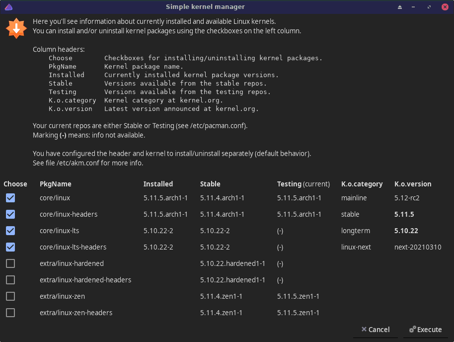
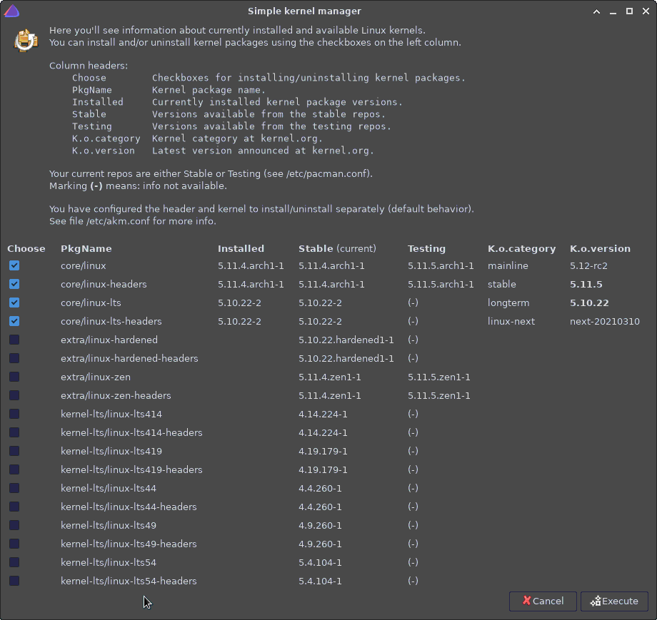

Simple kernel manager for EndeavourOS and Arch.
Note: does not
support kernels in AUR.

akm [--connect-header | --scroll]
where
--connect-header Tie the header package to the kernel package when installing/uninstalling.
--scroll Enable scrolling in the kernel info window.Without options, akm installs selected packages and
uninstalls unselected packages.
If option
--connect-header is used, then akm ties kernel
and header package into one atomic "unit" when installing or
uninstalling.
If selections of a kernel and its header conflict,
kernel selection is used for both packages. For example, if you only
choose to install package linux-zen but not its header,
option --connect-header would cause installing
linux-zen-headers too.
Option --scroll may be useful when using kernels from
additional repositories.
Configuration file /etc/akm.conf manages how
akm works.
Currently the supported configurations
are:
| Variable | Description | Supported values |
|---|---|---|
| KERNEL_HEADER_WITH_KERNEL | Tie header package with the kernel
package. Does the same as option --connect-header. |
"no" (=default) and "yes" |
| AKM_KERNELS_HEADERS | Additional kernel and header names. | List of reponame/pkgname
entries. |
| AKM_WINDOW_WIDTH | Width of the akm window in
pixels. |
A positive number, default is 900. |
You can add more (unofficial) package repositories into
/etc/pacman.conf.
If the repository contains linux
kernel packages, akm tries to automagically add them to the
list.
The picture below shows akm window after adding the
following unofficial repo:
[kernel-lts]
Server = https://repo.m2x.dev/current/$repo/$arch
This method of automatically detecting kernel names is limited
because kernels can be named in various ways.
Use configuration
variable AKM_KERNELS_HEADERS (mentioned above) to add a list of kernel
and header names from an additional repository. This is useful if the
automatic kernel name detection does not recognize certain kernel
names.
Just as an example, to use the info from the picture above, your
/etc/akm.conf could look something like this:
#!/bin/bash
### Config file for akm.
# When installing/uninstalling a kernel, you may configure to
# install/uninstall the related header too.
# Values: "yes" or "no"
# Default: no
local KERNEL_HEADER_WITH_KERNEL=yes
# List of kernel and header names when using additional repos.
# Example:
# local AKM_KERNELS_HEADERS=(
# reponame/linux-xxx reponame/linux-xxx-headers
# reponame/linux-yyy reponame/linux-yyy-headers
# ...
# )
# where
# reponame The name of an additional repository.
# linux-xxx The name of a kernel.
#
local AKM_KERNELS_HEADERS=(
kernel-lts/linux-lts414 kernel-lts/linux-lts414-headers
kernel-lts/linux-lts419 kernel-lts/linux-lts419-headers
kernel-lts/linux-lts44 kernel-lts/linux-lts44-headers
# and so on...
)
# Width of the akm window in pixels.
# Default: 900
local AKM_WINDOW_WIDTH=1000